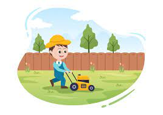

GRASS CUTTING MANAGEMENT SYSTEM
A grass cutting management system is a system used to manage and schedule the maintenance of grassy areas,
such as lawns and sports fields. This can include tasks such as mowing, fertilizing, aeration, and irrigation.
The system can be used to schedule regular maintenance and track progress, as well as to coordinate communication between different teams or contractors responsible for maintaining the grassy areas.
Depending on the specific system,
it may also include features such as GPS mapping, weather monitoring, and inventory management for equipment and supplies. Overall, a grass cutting management system can help to improve the efficiency and effectiveness of maintaining grassy areas,
resulting in healthier and more attractive lawns and fields.
Farmers and grass cutters may work together to ensure that the grassy areas on a farm are properly maintained. For example, a farmer may hire a grass cutter to regularly mow and trim the grass around farm buildings and equipment,
helping to keep the farm looking neat and tidy while also maintaining safety by reducing the risk of fire.
In some cases, farmers may also work with grass cutters to manage grazing land for livestock. The grass cutter can help to maintain the grass at a proper height for grazing animals and to keep the area free of weeds and other unwanted vegetation that can compete with the grass for nutrients.


CONTACT
Phone: +91 6360529665
Email: mail@mail.com